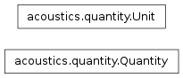

Quantities and units
The Quantity module provides two classes to work with quantities and units.

-
class acoustics.quantity.Quantity(name, unit, dynamic, symbol=None, symbol_latex=None, reference=1.0)[source]
Bases: object
Quantity.
-
__init__(name, unit, dynamic, symbol=None, symbol_latex=None, reference=1.0)[source]
-
dynamic = None
Dynamic quantity (True) or energetic (False).
-
energetic[source]
Energetic quantity (True) or dynamic (False).
-
name = None
Name of the quantity.
-
reference = None
Reference value of the quantity.
-
symbol = None
Symbol of the quantity.
-
symbol_latex = None
Symbol of the unit in LaTeX.
-
unit = None
Unit. See Unit.
-
class acoustics.quantity.Unit(name, symbol, symbol_latex)[source]
Bases: object
Unit of quantity.
Note
Perhaps inherit from tuple or collections.namedTuple?
-
__init__(name, symbol, symbol_latex)[source]
-
name = None
Name of the unit.
-
symbol = None
Symbol of the unit.
-
acoustics.quantity.get_quantity(name)[source]
Get quantity by name. Returns instance of Quantity.
| Parameters: | name – Name of the quantity. |
|---|
-
acoustics.quantity.quantities = {'pressure': ('Pressure', 'pascal', True, 'p', '$p$', 2e-05)}
Dictionary with quantities. Each quantity is stored as a tuple.
-
acoustics.quantity.units = {'pascal': ('pascal', 'Pa', '$Pa$'), 'meter': ('meter', 'm', '$m$')}
Dictionary with units. Each unit is stored as a tuple.